The models we have built so far have been models of how individuals perform a task or learn a representation. The environments with which these models have been engaged—the trials in an experiment or the materials in a domain to be learned—were provided to the model. This mimics the typical laboratory scenario where an experimenter defines the goals and givens for a participant and the job of the participant is to figure out how to achieve the goal with what they are given.
However, in many real-world settings, the environment that people engage in is itself comprised of other people! (Okay, experimenters are people too, but the interactions between experimenters and participants are, by design, tightly constrained.) Each person has some characteristics, shaped by their genetic heritage, development, culture, prior life experiences, etc., that ultimately inform what actions they will take at any given moment. Those actions—and their consequences—then become part of the environment for everyone else around them, providing them information that may get encoded in memory and used to guide their decisions. Those other people will then take their own actions, which will also be shaped by their own motivations, preferences, beliefs, knowledge, etc. In turn, those actions and their consequences contribute to the environment with which everyone interacts. As we have seen, building computational cognitive models even of single individuals in a tightly-constrained environment is far from trivial. Modeling an entire group of people mutually interacting with one another is thus a daunting task!
Of course, intrepid scientists find a way. The field of agent-based modeling helps us to understand how the interactions between cognitively sophisticated individuals—called “agents”—produces phenomena at the level of entire groups, communities, and populations. Thus, agent-based modeling acts as a bridge between computational cognitive models of individuals and theories of groups.
It will probably not be surprising to you that the inherent complexity of modeling groups of people means that the models for individual agents will tend to be much simpler than the individual-focused cognitive models we have built so far. In addition, agent-based models are primarily used for simulation purposes, to demonstrate the predictions of a theory, rather than for parameter estimation. This second property is due to a couple of factors: First, it is rarely possible to compute the likelihood (or other measure of goodness-of-fit) for agent-based models. Second, it is not always practical or sensible to define goodness-of-fit for many of the phenomena that agent-based models are designed to explain. When modeling individuals, we can rely on our ability to recruit many participants into a study and for each individual to engage in many trials of a task, thus allowing us identify systematic features of behavior that are the explanatory targets of our model. When modeling groups, unless they are very small, we cannot typically “replicate” the conditions under which the group is acting, making it difficult to quantify the degree to which groups systematically exhibit some quantifiable characteristic. Nonetheless, agent-based models are a powerful theoretical tool for understanding how qualitative group phenomena arise from interactions between individuals (Smith & Conrey, 2007).
The models below are focused on what can broadly be called cultural evolution, in that the models focus on the decisions by individuals to adopt (or not) a particular characteristic.
In biological evolution, we would consider how traits encoded by genes do or do not get passed on from one generation to the next, depending on whether or not those traits were beneficial to the organism’s reproductive success in its environment. By building models that allow for different selection mechanisms, different mating assortments, and different forms of mutation, we can examine those choices influence how the traits of a population will change over many generations.
Cultural evolution, on the other hand, does not require births and deaths to occur. Instead of a population changing as a function of organisms either surviving to reproduce or not, we will be modeling how populations change as a function of the choices made by the individual members of those populations. The kinds of choices we will consider could be concrete things like whether to support a political candidate, buy a product, use a service, etc. They could also represent more abstract choices, like the choice to like a particular style of music or a type of diet or a strategy for performing some task. To that last point, the choices made by the agents in our models need not be discrete—they may instead be choices to adjust a parameter with a particular meaning within the scope of the model.
The outcome of each choice amounts to a decision by the agent about whether to adopt a certain value for a trait. The evidence that agents use for making these choices comes from their interactions with other members of the population. In all of the models below, we imagine that each agent interacts with one or more other agents in discrete time-steps. At the end of each time step, each agent decides what value to take for its trait.
We will first explore models with discrete-valued traits and then models with continuous-valued traits. Conceptually, there is not much difference between these two types of traits, but there are both conceptual and technical differences in terms of how we model different mechanisms of social cognition with regard to these traits.
13.2 Copying your neighbors
We will begin by constructing a very simple model of a population of agents interacting with one another. Each agent has a single trait that can take one of two values, A or B. In each time step, an agent picks at random another member of the population and adopts whatever value of the trait they have. We can think of this population as sort of like “myopic lemmings”. The point of this is not necessarily to be a realistic model of any interesting social process. But constructing this model will introduce us to the basic components of an agent-based model.
13.2.1 Representing a population
To begin, we will need a data structure to store the trait values for each agent on each time step. Also, since this will be a simulation model, we will want to run the simulation several times to get a sense of the kinds of populations that are produced by each of the mechanisms we will explore. Thus, our data structure should have three dimensions: one to index each simulation, one to index each time-step, and one to index each agent in the population. Thus, a 3D array is called for, as illustrated below (where I also give the array and traits some handy names).
At the moment, the population array is full of NAs. We need to initialize the population by assigning trait values to each agent on the first time step. These initial values will be random. We will want the flexibility to specify the probability that any agent is initialized with each possible value of the trait. For example, we could use the variable specification p0 <- c(0.5, 0.5) to specify that, in a model with 2 n_traits, each member of the initial population has an equal chance of adopting either value. This is illustrated in a more general form below which refers to the n_traits variable.
Code
p0 <-rep(1/ n_traits, n_traits)# sim_index is a variable that indicates which simulation we are currently runningpopulation[sim_index, 1, ] <-sample(trait_names, size = n_pop, replace =TRUE, prob = p0)
13.2.3 Specifying interaction and updating processes
For each agent-based model we build, we need to specify (a) how the agents interact; and (b) how those interactions result in adopting a potentially updated trait value on the next time-step. For our first model, these two processes are very simple, as illustrated in the code below. Note that the code is wrapped in a for loop so that these processes recur on each time-step.
Code
for (t in2:max_t) {# For each member of the population, sample a "demonstrator" at random demonstrator <-sample(n_pop, size = n_pop, replace =TRUE)# Each population member at time `t` adopts the trait from their `demonstrator`# on the previous time-step `t - 1` population[sim_index, t, ] <- population[sim_index, t -1, demonstrator]}
13.2.4 The final function
Finally, let’s put all the steps above into a function that we can call with different parameter values, as shown below. We will continue to add to this function and make alternate versions as we go. Note the use of the array2DF function at the end which converts our population array into a form that will be easier for us to visualize afterwards.
The chunk of code below gives an example of running our discrete_trait_evolution function. After running the function, we create a summary data frame that, for each simulation run and each time-step, gives the proportion of the population with trait "A". This summary is then used to plot how this proportion evolves over time as a result of the simple interaction/updating processes we specified in our model.
`summarise()` has grouped output by 'sim_index'. You can override using the
`.groups` argument.
Code
sim_summary %>%ggplot(aes(x = t, y = p_A, color =factor(sim_index))) +geom_line(aes(group = sim_index), linewidth =0.5) +stat_summary(fun = mean, geom ="line", linewidth =1.5, color ="black") +scale_color_discreterainbow() +ylim(0, 1) +labs(x ="Time", y ="Proportion with trait A", color ="Sim.")
Each colored line represents a different simulation and the thick black line is the mean over all 10 simulations. We can see that the proportion of the population with trait A evolves according to basically a random walk until, at some point, every agent in the population has the same trait, either A (proportion 1) or B (proportion 0). At that point, no more cultural evolution can occur because each agent will only ever copy another agent with the same trait.
Just like when we used a random walk to model deliberation during decision making, if we initialize the population to be biased toward one trait or another, the population is more likely to evolve to a point where the initially more common trait becomes dominant. This is shown in the simulations below.
`summarise()` has grouped output by 'sim_index'. You can override using the
`.groups` argument.
Code
sim_summary %>%ggplot(aes(x = t, y = p_A, color =factor(sim_index))) +geom_line(aes(group = sim_index), linewidth =0.5) +stat_summary(fun = mean, geom ="line", linewidth =1.5, color ="black") +scale_color_discreterainbow() +ylim(0, 1) +labs(x ="Time", y ="Proportion with trait A", color ="Sim.")
13.3 More complex interactions
With the basic model framework established, we can flesh out the model with some more sophisticated mechanisms for interaction and updating. This will enable us to model more interesting kinds of processes that can lead to some more interesting kinds of phenomena.
13.3.1 Varying probability of adopting a trait
The first thing we can try is to imagine that different trait values are more likely to be adopted than others. This might occur, for example, if the decision about whether to adopt the trait were based on its utility, ease, or some other reward. For example, if there may be two candidate strategies for performing a task—a slow and laborious method adopted by those with trait B and a faster and easier method adopted by those with trait A. If the agents can be assumed to be aware of this distinction, then an agent would be more likely to adopt a trait from a demonstrator with trait A than with trait B.
The code below amends our earlier function to include a new argument, p_adopt. By default, this argument is set to rep(1, n_traits) which reproduces the model we just built where an agent always adopts whatever trait their demonstrator has. The key changes are labeled with comments below.
Code
discrete_trait_evolution <-function(n_pop =1000, max_t =100, n_sims =10, n_traits =2, p0 =rep(1/ n_traits, n_traits), trait_names = LETTERS[1:n_traits], p_adopt =rep(1, n_traits)) { population <-array(NA,dim =c(n_sims, max_t, n_pop),dimnames =list("sim_index"=1:n_sims,"t"=1:max_t,"member"=1:n_pop) )# Make sure `p_adopt` is a named vector so we can use those names later as indicesnames(p_adopt) <- trait_namesfor (sim_index in1:n_sims) { population[sim_index, 1, ] <-sample(trait_names, size = n_pop, replace =TRUE, prob = p0)for (t in2:max_t) { demonstrator <-sample(n_pop, size = n_pop, replace =TRUE) demonstrator_trait <- population[sim_index, t -1, demonstrator]# For each member of the population, we use the `runif` trick to# decide whether they should adopt the demonstrators trait or keep# their old one. population[sim_index, t, ] <-if_else(# This condition is TRUE with probability `p_adopt[demonstrator_trait]`runif(n = n_pop) < p_adopt[demonstrator_trait],# If true, adopt the demonstrator's trait population[sim_index, t -1, demonstrator],# Else, keep the old trait population[sim_index, t -1, ] ) } }return(as_tibble(array2DF(population, responseName ="trait")) %>%mutate(sim_index =as.numeric(sim_index), t =as.numeric(t), member =as.numeric(member)) )}
Let’s see what happens if people have a higher chance of adopting trait A than trait B. Specifically, we will set p_adopt = c(0.7, 0.5) so the probability of adopting trait A is 0.7 and is 0.5 for trait B. Note that these numbers don’t have to add up to one!
`summarise()` has grouped output by 'sim_index'. You can override using the
`.groups` argument.
Code
sim_summary %>%ggplot(aes(x = t, y = p_A, color =factor(sim_index))) +geom_line(aes(group = sim_index), linewidth =0.5) +stat_summary(fun = mean, geom ="line", linewidth =1.5, color ="black") +scale_color_discreterainbow() +ylim(0, 1) +labs(x ="Time", y ="Proportion with trait A", color ="Sim.")
As we can see above, the population quickly evolves so that the “better” trait (A) dominates. This is true even if trait A is rare in the initial population, as shown below.
`summarise()` has grouped output by 'sim_index'. You can override using the
`.groups` argument.
Code
sim_summary %>%ggplot(aes(x = t, y = p_A, color =factor(sim_index))) +geom_line(aes(group = sim_index), linewidth =0.5) +stat_summary(fun = mean, geom ="line", linewidth =1.5, color ="black") +scale_color_discreterainbow() +ylim(0, 1) +labs(x ="Time", y ="Proportion with trait A", color ="Sim.")
13.3.2 Multiple demonstrators and conformity
There’s no reason why each agent has to only pick one demonstrator with which to interact! Our next amendment to the model is thus to allow for more than one demonstrator per time-step. We will add an argument n_demonstrators to specify how many demonstrators each agent picks on each time-step.
Having multiple demonstrators opens the possibility that they do not all share the same trait—so how should we adjust our updating process to accommodate this? First, each agent will need to add up the number of their demonstrators that exhibit each trait. Then, the agent will adopt a trait in proportion to its frequency among those demonstrators.
We will take this opportunity to introduce a new parameter to the model, using \(k\) to represent it in math and conformity to represent it in code. This parameter will represent the tendency for each agent in the population to prefer to adopt traits that are more common among their demonstrators. Specifically, if \(n_v\) is the number of demonstrators with trait \(v\), the probability of adopting that trait will be \[
p_v = \frac{n_v^k}{\sum_{u = 1}^{N_T} n_u^k}
\] where \(N_T\) is the total number of possible trait values.
To see the effect of the \(k\) parameter, the graph below illustrates the probability of adopting trait \(v\) in a situation where there are two possible traits and there are 10 demonstrators.
Code
expand_grid(n_v =seq(0, 10), k =seq(0, 5)) %>%mutate(p_v = n_v^k / (n_v^k + (10- n_v)^k)) %>%ggplot(aes(x = n_v, y = p_v, color = k, group = k)) +geom_line() +scale_color_viridis_c() +labs(x =expression(n[v]), y =expression(p[v]), color ="k")
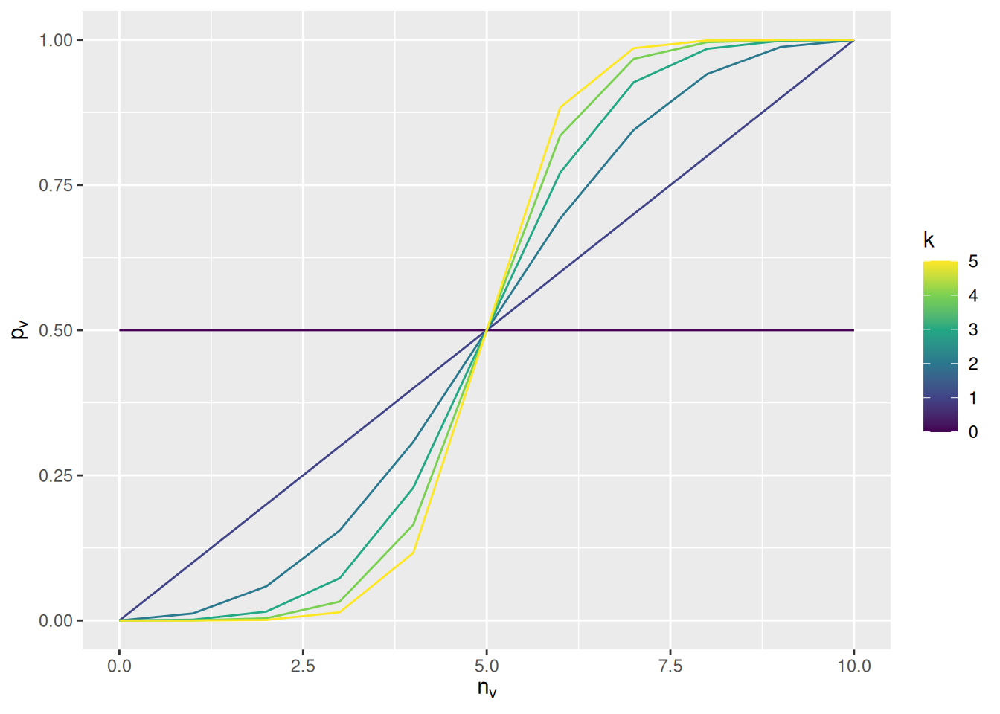
If \(k = 0\), then the agent totally ignores the frequency of the traits among the demonstrators. If \(k = 1\), the probability of adopting the trait is simply the prevalence of the trait among the demonstrators. As \(k\) increases above 1, the probability of adopting the more common trait increases when there is a mixture of traits among the demonstrators (e.g., when only 6 out of 10 exhibit trait \(v\)).
This updating process is implemented in the code below—note the comments explaining what each line does. Some of these are a bit ugly, but serve the purpose of making the model run much faster!
Code
discrete_trait_evolution <-function(n_pop =1000, max_t =100, n_sims =10, n_traits =2, p0 =rep(1/ n_traits, n_traits), trait_names = LETTERS[1:n_traits], p_adopt =rep(1, n_traits), n_demonstrators =1, conformity =1) { population <-array(NA,dim =c(n_sims, max_t, n_pop),dimnames =list("sim_index"=1:n_sims,"t"=1:max_t,"member"=1:n_pop) )names(p_adopt) <- trait_names p_adopt_mat <-matrix(p_adopt, nrow = n_pop, ncol = n_traits, byrow =TRUE)for (sim_index in1:n_sims) { population[sim_index, 1, ] <-sample(trait_names, size = n_pop, replace =TRUE, prob = p0)for (t in2:max_t) { demonstrators <-sample(n_pop, size = n_pop * n_demonstrators, replace =TRUE) demonstrator_trait <-matrix( population[sim_index, t -1, demonstrators],nrow = n_pop, ncol = n_demonstrators )# Count the number of times each trait appears among the demonstrators for each agent, weighted by the probability of adoption (p_adopt_mat) demo_counts <-t(apply(demonstrator_trait, MARGIN =1, FUN =function(traits) table(factor(traits, levels = trait_names)))) * p_adopt_mat# Apply the conformity transformation to find the probability of choosing p_demo <- demo_counts^conformity /rowSums(demo_counts^conformity)# For each agent, pick a new trait in proportion to p_demo population[sim_index, t, ] <-apply(p_demo, MARGIN =1, FUN =function(p) sample(trait_names, size =1, prob = p)) } }return(as_tibble(array2DF(population, responseName ="trait")) %>%mutate(sim_index =as.numeric(sim_index), t =as.numeric(t), member =as.numeric(member)) )}
When the conformity parameter is set to 1, then we just replicate the first model we built. In that case, the probability of adopting a trait is directly proportional to its prevalence. This unbiased meandering is shown in the simulations below.
`summarise()` has grouped output by 'sim_index'. You can override using the
`.groups` argument.
Code
sim_summary %>%ggplot(aes(x = t, y = p_A, color =factor(sim_index))) +geom_line(aes(group = sim_index), linewidth =0.5) +stat_summary(fun = mean, geom ="line", linewidth =1.5, color ="black") +scale_color_discreterainbow() +ylim(0, 1) +labs(x ="Time", y ="Proportion with trait A", color ="Sim.")
On the other hand, when conformity is greater than one, the population tends to evolve to have one dominant trait, but it is effectively random which trait wins out each time, as shown below.
`summarise()` has grouped output by 'sim_index'. You can override using the
`.groups` argument.
Code
sim_summary %>%ggplot(aes(x = t, y = p_A, color =factor(sim_index))) +geom_line(aes(group = sim_index), linewidth =0.5) +stat_summary(fun = mean, geom ="line", linewidth =1.5, color ="black") +scale_color_discreterainbow() +ylim(0, 1) +labs(x ="Time", y ="Proportion with trait A", color ="Sim.")
Whichever trait manages to become more common will then tend to be adopted more, resulting in a “rich-get-richer” feedback cycle. These dynamics are even more apparent if we bias the initial population so that one trait tends to be more common than the other, as illustrated below.
`summarise()` has grouped output by 'sim_index'. You can override using the
`.groups` argument.
Code
sim_summary %>%ggplot(aes(x = t, y = p_A, color =factor(sim_index))) +geom_line(aes(group = sim_index), linewidth =0.5) +stat_summary(fun = mean, geom ="line", linewidth =1.5, color ="black") +scale_color_discreterainbow() +ylim(0, 1) +labs(x ="Time", y ="Proportion with trait A", color ="Sim.")
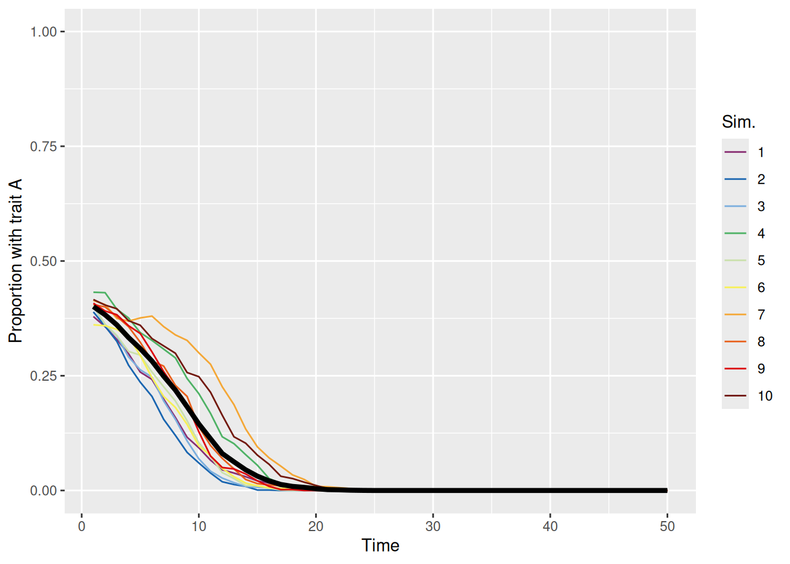
13.3.3 Demonstrators of varying status
In the models we’ve built so far, we’ve assumed that every member of the population has an equal chance of being picked as one of the demonstrators picked by an agent. Often, though, it would be better to think that demonstrators are selected on the basis of some characteristic that makes them more “prominent” than others. For example, some agents might be more sociable, interacting with more agents. Or some agents may have more resources to send messages to other agents (e.g., if someone is a popular influencer). Or some agents might be more successful or attractive than others, causing other agents to pay more attention to them. The point is that some agents may be more “prominent” than others, though the reason why will depend on the particular scenario we are modeling.
For the purposes of our model, we will now add a property to each agent called status. This will be a number between zero and one that represents the relative likelihood that an agent gets picked as a demonstrator on each time-step. There are many other ways we could operationalize this construct, of course. For example, we could treat status as discrete (e.g., high vs. low status) or we could treat status as unbounded rather than capped at one. The approach here is just one option!
13.3.3.1 Representing status
To model varying status, we will use a second array to keep track of the status of each agent on each time-step of each simulation run. This array has exactly the same structure as the population array we’ve been using so far to keep track of each agent’s trait value, as shown below:
Code
status <-array(NA,dim =c(n_sims, max_t, n_pop),dimnames =list("sim_index"=1:n_sims,"t"=1:max_t,"member"=1:n_pop) )
In our initial set of simulations, we will assume that each agent’s status is fixed over time, so technically the above is “overkill”. However, later on we will look at models that allow status to vary over time, so adopting this “over-powered” approach saves us some work down the line.
13.3.3.2 Initializing status
There are many ways we could assign initial status values to each agent, but we take the following approach. We will introduce a parameter mean_init_status that varies between 0 and 1. We will use this parameter to define the parameters of a Beta distribution from which we will sample the initial status values, as shown in the code below which will appear at the beginning of each simulation run. We also do a correction to ensure that there is at least one agent with the maximum status value of 1, so that we don’t accidentally have simulations where all agents have low status values.
Code
# First, sample initial status values from Beta distributionstatus[sim_index, 1, ] <-rbeta(n = n_pop, shape1 = mean_init_status, shape2 =1- mean_init_status)# Then divide by the maximum sampled value so that there is at least one agent with a status of 1status[sim_index, 1, ] <- status[sim_index, 1, ] /max(status[sim_index, 1, ])
The plot below shows how the mean_init_status parameter affects the distribution of status across the population. Note that there are always modes at 0 and 1, so we will expect so find “clusters” of high and low status agents as well as a smattering of agents with moderate status between 0 and 1. When mean_init_status is less than 0.5, more agents will fall on the low end than the high end, modeling a situation where there are comparatively few high status agents. The opposite occurs when mean_init_status is greater than 0.5.
Code
expand_grid(status =seq(0.01, 0.99, length.out =101), mean_init_status =seq(0.1, 0.9, length.out =5)) %>%mutate(d =dbeta(status, mean_init_status, 1- mean_init_status)) %>%ggplot(aes(x = status, y = d, color = mean_init_status, group = mean_init_status)) +geom_line() +scale_color_viridis_c() +labs(x ="Status", y ="Density", color ="Mean initial\nstatus", title ="Distribution of initial status across population")
Finally, if we set mean_init_status to 1, the resulting distribution is a “spike” at 1. In that circumstance, all agents will get a status of 1, effectively eliminating any effect of status.
13.3.3.3 Examples
The code below is our updated simulation function. The role of an agent’s status is indicated by the comment, where status[sim_index, t - 1, ] is used to define the probability with which an agent is sampled as a demonstrator. Note that the sample function automatically normalizes the prob argument to sum to one, so we don’t need to do that ourselves.
Now let’s see what happens to a population when people tend to adopt the traits of high-status agents more than low-status agents. In the following simulation, we assume only a single demonstrator per agent and equal base rates for each of two traits in the initial population. To produce a large disparity in status, we set mean_init_status to 0.05, so that most agents have low status and only a few have high status.
As you can see, we’ve made two plots to visualize our results for reasons that will become clear shortly. The left plot shows that, as in the first set of simulations we ran, the population will tend to evolve until one trait becomes dominant. The right plot shows the mean status among agents grouped by their initial trait values. The right plot helps explain which of the two traits eventually becomes dominant. If one trait is more closely associated with high-status individuals at the beginning of the simulation, then that trait is the one that is most likely to dominate. This is because agents will tend to emulate high-status agents.
13.4 Continuous-valued traits
As noted earlier, we can also build agent-based models where the agents’ traits take continuous values instead of discrete values. Continuous traits might represent the degree of belief in a theory or cultural tenet, degree of preference for a political candidate or work of art, or even a parameter in a cognitive model. Modeling the evolution of continuous traits involves making some changes to our simulation code, although we will see that many of the same concepts apply. The main difference between continuous and discrete traits is that, with continuous traits, we can model phenomena that depend on similarity between agents, as measured by how different their traits are.
13.4.1 Initializing the population
With discrete traits, we assigned initial values to agents using the sample function. In the following model, we will instead assume that initial trait values are sampled from a normal distribution. For simplicity we will assume that the mean of this normal distribution is zero and introduce an (optional) parameter init_trait_sd with a default value of 1 that represents the standard deviation of the initial trait distribution. Of course, we could choose different distributions like a uniform or a Beta distribution or a Gamma distribution depending on what the trait was intended to represent. And we could add additional parameters if we wanted, too. Again, what we are doing here is just one of many viable approaches. Nonetheless, here’s how we will initialize the trait values on the first time-step of the simulation indexed by sim_index:
Our model will still allow us to simulate agents who sample multiple demonstrators, rather than just one. To model conformity in this situation, we can’t just look at the proportion of demonstrators with each trait. Instead, we will model conformity by assigning a weight to each demonstrator that is proportional to how far their trait value is from the mean of the demonstrators.
In the code snippet below, demonstrator_trait is a matrix with one row per agent and one column per demonstrator. Therefore, rowMeans(demonstrator_trait) gives a vector of the average trait value for each agent’s sampled demonstrators. We can then find each demonstrators squared deviation from their mean by writing (demonstrator_trait - matrix(rowMeans(demonstrator_trait), nrow = n_pop, ncol = n_demonstrators, byrow = FALSE))^2. Finally, since we want to give more weight to demonstrators close to the mean, we will use a similar exponential transformation to the one we used with the EBRW.
Mathematically, if \(\bar{x}_{\mathcal{D}}\) is the mean trait value among the set of demonstrators \(\mathcal{D}\), then the weight for demonstrator \(j\) is: \[
w_j = \exp \left[ -k \frac{\left(x_j - \bar{x}_{\mathcal{D}} \right)^2}{2} \right]
\] where the parameter \(k\) is a nonnegative number representing a preference for conformity and the division by 2 is to maintain convention with how the Gaussian distribution is defined. The graph below illustrates how the weight changes as a function of distance from the mean demonstrator trait and conformity parameter \(k\).
Code
expand_grid(d =seq(0, 5, length.out =101), k =seq(0, 5)) %>%mutate(w =exp(-k * d^2/2)) %>%ggplot(aes(x = d, y = w, color = k, group = k)) +geom_line() +scale_color_viridis_c() +labs(x =expression(x[j] -bar(x)[D]), y =expression(w[j]), color ="k")
When \(k = 0\), all demonstrators get equal weight. The larger \(k\) gets, the less weight is given to demonstrators that are farther from the mean. Note that this means that, if none of the demonstrators are close to the mean, they will all be given comparatively little weight. A preference for conformity means that an agent will only give weight to demonstrators who tend to cluster around a common value.
In code, we write the weighting function like so (where conformity is the code equivalent of \(k\)):
The final change to our model is in how agents update their traits. Instead of simply copying a value from a demonstrator, an agent will be nudged toward the value of the demonstrators. Specifically, the new trait value will be a weighted average of their previous value and those of the demonstrator(s). Mathematically, we can write this as \[
x_{i}(t) = \frac{w_{\text{Self}} x_{i}(t - 1) + \sum_{j \in \mathcal{D}} w_j x_j(t - 1)}{w_{\text{Self}} + \sum_{j \in D} w_j}
\] where \(x_i(t - 1)\) is agent \(i\)’s trait value at time-step \(t - 1\), \(w_{text{Self}}\) is the weight given to the agent’s own previous trait value, \(\mathcal{D}\) is the set of demonstrators for agent \(i\), and each \(w_j\) is the weight given to that demonstrator according to the “conformity” rule described above.
In code, we write this updating process like so, where self_weight is code for \(w_{\text{Self}}\) above.
The code below illustrates our final simulation function for dealing with continuous-valued traits. You’ll notice that much of it is the same as our discrete_trait_evolution function except for the changes noted earlier in this section.
We can largely replicate the discrete trait-copying model we used earlier if we set the self_weight parameter to 0, so that agents just adopt the trait value of whatever demonstrator they happen to select.
`summarise()` has grouped output by 'sim_index'. You can override using the
`.groups` argument.
Code
mean_plot <- trait_summary %>%ggplot(aes(x = t, y = mean_trait, color =factor(sim_index))) +geom_line(linewidth =0.5) +stat_summary(fun = mean, geom ="line", linewidth =1, color ="black") +scale_color_discreterainbow() +labs(x ="Time", y ="Mean trait value", color ="Sim.")sd_plot <- trait_summary %>%ggplot(aes(x = t, y = sd_trait, color =factor(sim_index))) +geom_line(linewidth =0.5) +stat_summary(fun = mean, geom ="line", linewidth =1, color ="black") +scale_color_discreterainbow() +expand_limits(y =0) +labs(x ="Time", y ="Trait value standard deviation", color ="Sim.")mean_plot + sd_plot +plot_layout(nrow =1, guides ="collect")
The graphs above show both the mean (left) and standard deviation (right) of the trait values in the population over time. Although the mean trait values meander around, there is a tendency for the standard deviation to diminish over time. This is because the copying process causes certain trait values to drop out of the population over time, until eventually all agents adopt the same trait. This mimics the same convergence behavior that we saw with the discrete trait models above.
One might naively assume that if we set the self_weight to 1, so that agents effectively adopt a “compromise” between their trait values and those of their demonstrators, that this would slow convergence. In fact, just the opposite! As shown below, populations quickly converge on a “consensus” value that is close to the population average of zero.
`summarise()` has grouped output by 'sim_index'. You can override using the
`.groups` argument.
Code
mean_plot <- trait_summary %>%ggplot(aes(x = t, y = mean_trait, color =factor(sim_index))) +geom_line(linewidth =0.5) +stat_summary(fun = mean, geom ="line", linewidth =1, color ="black") +scale_color_discreterainbow() +labs(x ="Time", y ="Mean trait value", color ="Sim.")sd_plot <- trait_summary %>%ggplot(aes(x = t, y = sd_trait, color =factor(sim_index))) +geom_line(linewidth =0.5) +stat_summary(fun = mean, geom ="line", linewidth =1, color ="black") +scale_color_discreterainbow() +expand_limits(y =0) +labs(x ="Time", y ="Trait value standard deviation", color ="Sim.")mean_plot + sd_plot +plot_layout(nrow =1, guides ="collect")
Finally, a preference for conformity among demonstrators also leads to a rapid convergence of the population onto a single consensus value, as shown below.
`summarise()` has grouped output by 'sim_index'. You can override using the
`.groups` argument.
Code
mean_plot <- trait_summary %>%ggplot(aes(x = t, y = mean_trait, color =factor(sim_index))) +geom_line(linewidth =0.5) +stat_summary(fun = mean, geom ="line", linewidth =1, color ="black") +scale_color_discreterainbow() +labs(x ="Time", y ="Mean trait value", color ="Sim.")sd_plot <- trait_summary %>%ggplot(aes(x = t, y = sd_trait, color =factor(sim_index))) +geom_line(linewidth =0.5) +stat_summary(fun = mean, geom ="line", linewidth =1, color ="black") +scale_color_discreterainbow() +expand_limits(y =0) +labs(x ="Time", y ="Trait value standard deviation", color ="Sim.")mean_plot + sd_plot +plot_layout(nrow =1, guides ="collect")
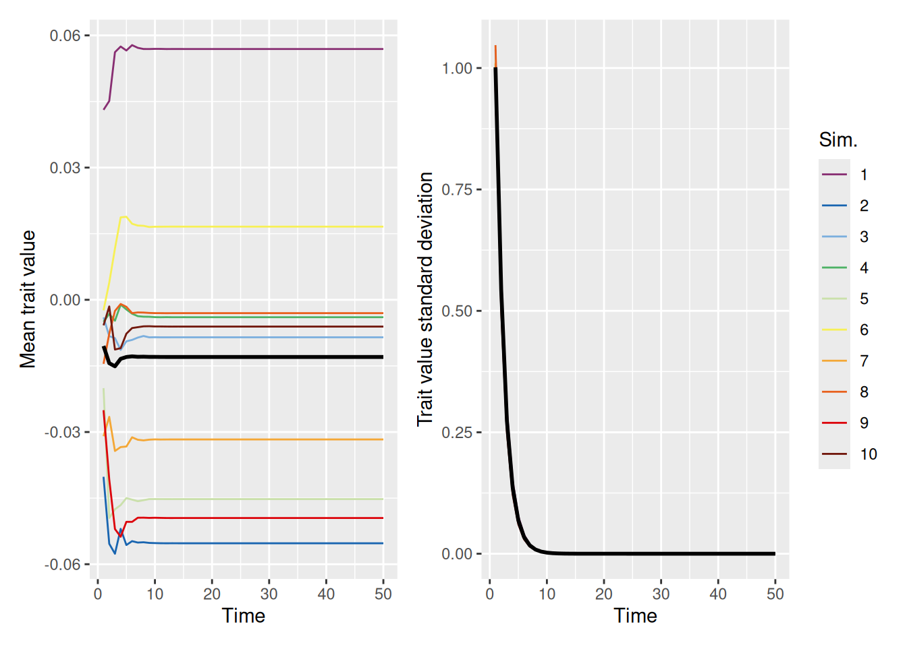
13.5 Popularity of the fittest
Earlier, we modeled situations in which agents were more likely to pick high-status as opposed to low-status agents as demonstrators. So far, we have treated status as something that each agent simply possessed and which did not change over time. Modeling continuous-valued traits gives us a natural way to allow status to vary as a function of the relative fitness that an agent is able to achieve. “Fitness” could mean various things—it might reflect an objective increase in the agent’s success, like being happier, or achieving more, or being able to do something better, or having more stuff. It might also reflect a latent preference among members of the population for some property, like an aesthetic preference that is somehow inherent in each agent’s beliefs. Regardless of the cause, if an agent’s status is related to its trait value, then it would make sense for agents to prefer to choose high-status agents as demonstrators. That way, an agent will be more likely to improve their own status.
After seeing an example of how status-based selection works with continuous traits, we will build in one way to implement the idea that there is an “ideal” trait value that agents seek to adopt. We will then build into the model a form of “innovation” that enables the population to converge toward this ideal more consistently.
13.5.1 Convergence to high-status trait values
Like we saw with discrete-valued traits, continuous-valued traits in a population tend to converge on trait values that are more common among high-status individuals. This is illustrated in the example below, where we set mean_init_status to 0.05, so that most individuals have low status and only a few have high status.
`summarise()` has grouped output by 'sim_index'. You can override using the
`.groups` argument.
Code
mean_trait_range <-range(trait_summary$mean_trait)mean_plot <- trait_summary %>%ggplot(aes(x = t, y = mean_trait, color =factor(sim_index))) +geom_line(linewidth =0.5) +stat_summary(fun = mean, geom ="line", linewidth =1, color ="black") +scale_color_discreterainbow() +coord_cartesian(ylim = mean_trait_range) +labs(x ="Time", y ="Mean trait value", color ="Sim.")sd_plot <- trait_summary %>%ggplot(aes(x = t, y = sd_trait, color =factor(sim_index))) +geom_line(linewidth =0.5) +stat_summary(fun = mean, geom ="line", linewidth =1, color ="black") +scale_color_discreterainbow() +expand_limits(y =0) +labs(x ="Time", y ="Trait value standard deviation", color ="Sim.")init_trait_plot <- sim %>%filter(t ==1) %>%group_by(sim_index) %>%summarize(weighted_mean_trait =sum(trait * status) /sum(status)) %>%ggplot(aes(x =factor(sim_index), y = weighted_mean_trait, color =factor(sim_index))) +geom_point() +scale_color_discreterainbow(guide ="none") +coord_cartesian(ylim = mean_trait_range) +labs(x ="Simulation index", y ="Status-weighted mean initial trait value")mean_plot + init_trait_plot + sd_plot +plot_layout(nrow =1, widths =c(1.5, 1, 1), guides ="collect")
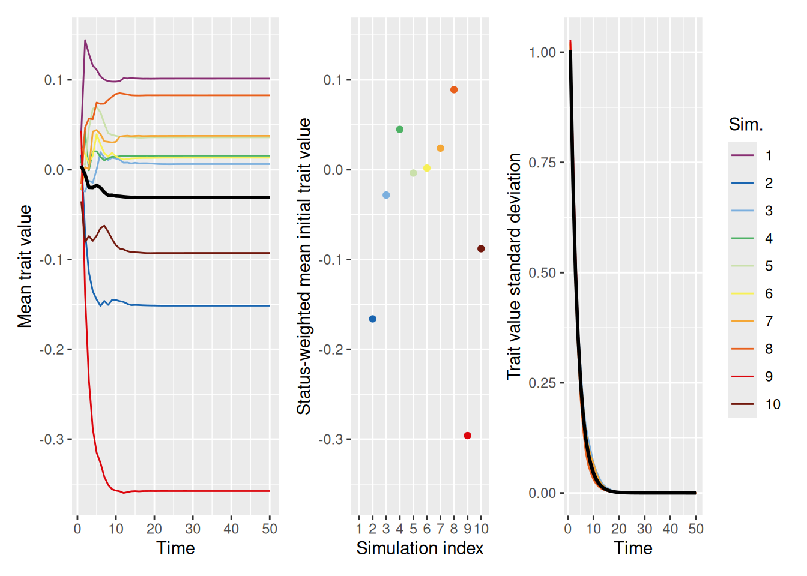
As shown in the left and right graphs, the trait values in the population tend to “collapse” to a single value fairly quickly. The middle graph shows the average trait value in the initial population, weighted by the status of each agent (which again does not change over time). Similar to what we saw with discrete-valued traits, it looks like the value that the population converges on is biased in the direction of the values that were more common among high-status individuals. This behavior is a bit easier to see if we make the initial trait values more variable, so that there is a larger difference between them. In the simulation below, we do this by setting init_trait_sd to a value larger than the default value of 1.
`summarise()` has grouped output by 'sim_index'. You can override using the
`.groups` argument.
Code
mean_trait_range <-range(trait_summary$mean_trait)mean_plot <- trait_summary %>%ggplot(aes(x = t, y = mean_trait, color =factor(sim_index))) +geom_line(linewidth =0.5) +stat_summary(fun = mean, geom ="line", linewidth =1, color ="black") +scale_color_discreterainbow() +coord_cartesian(ylim = mean_trait_range) +labs(x ="Time", y ="Mean trait value", color ="Sim.")sd_plot <- trait_summary %>%ggplot(aes(x = t, y = sd_trait, color =factor(sim_index))) +geom_line(linewidth =0.5) +stat_summary(fun = mean, geom ="line", linewidth =1, color ="black") +scale_color_discreterainbow() +expand_limits(y =0) +labs(x ="Time", y ="Trait value standard deviation", color ="Sim.")init_trait_plot <- sim %>%filter(t ==1) %>%group_by(sim_index) %>%summarize(weighted_mean_trait =sum(trait * status) /sum(status)) %>%ggplot(aes(x =factor(sim_index), y = weighted_mean_trait, color =factor(sim_index))) +geom_point() +scale_color_discreterainbow(guide ="none") +coord_cartesian(ylim = mean_trait_range) +labs(x ="Simulation index", y ="Status-weighted mean initial trait value")mean_plot + init_trait_plot + sd_plot +plot_layout(nrow =1, widths =c(1.5, 1, 1), guides ="collect")
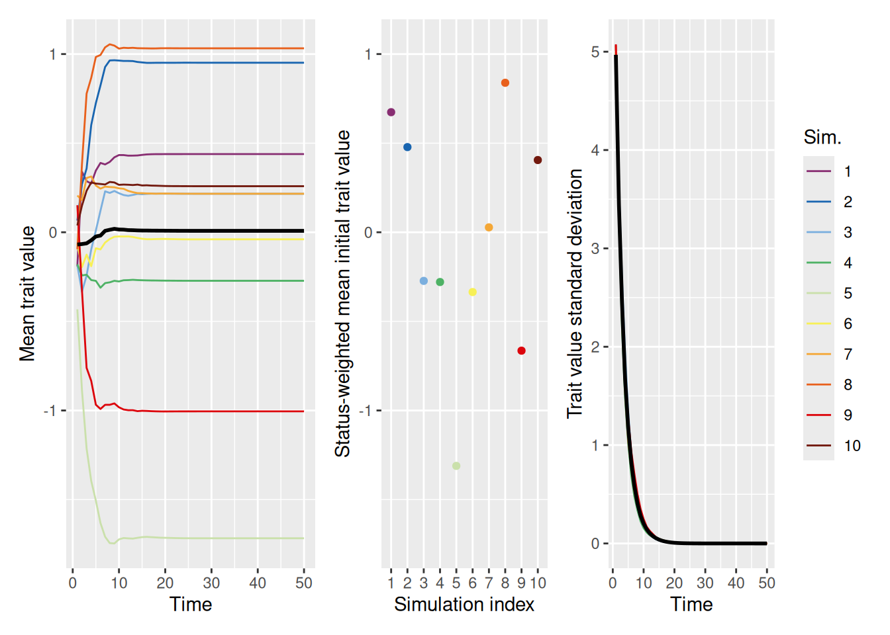
The main thing to take away from these examples is that, when demonstrators are selected in proportion to their status, agents are more likely to adopt the traits of high-status individuals. This leads to the population converging on a trait value that is biased toward whatever values happened to be held by the high-status individuals initially. This is just like what we saw with discrete-valued traits.
13.5.2 Defining an “ideal” trait value
Now we introduce the idea that status is not merely random, but is instead a function of how close someone’s trait is to an “ideal” value. As noted above, a value might be “ideal” because it has some objectively good consequences (like doing something more easily or more successfully) or because there is some latent preference among agents for a particular value.
To model this idea, we will set the status of each individual to be inversely proportional to the squared difference between their trait value and the ideal trait value. In math, if \(x_i(t)\) is the trait value of agent \(i\) at time \(t\) and \(\tilde{x}\) is the ideal trait value, then the status of agent \(i\) at time \(t\) is \[
s_i(t) = \exp \left[-\phi \frac{\left(x_i(t) - \tilde{x} \right)^2}{2} \right]
\] where \(\phi\) is a parameter representing how quickly status drops off as a function of distance from the ideal trait value. Basically, this is the same functional form we used to define conformity earlier!
This is implemented in the expanded function below, where the ideal trait value \(\tilde{x}\) is called ideal_trait_value and \(\phi\) is called ideal_strength. Note that, by default, the ideal trait value is NA—if this is the case, the function will revert to simulating status as a static random property like it was earlier.
To see how this works, let’s run a set of simulations setting the ideal_trait_value to 2. Recall that the initial trait values are sampled from a normal distribution with a mean of 0 and (by default) a standard deviation of 1. Therefore, this situation models what might happen if most agents are initially pretty far from the ideal trait, but a few happen to be nearby.
`summarise()` has grouped output by 'sim_index'. You can override using the
`.groups` argument.
Code
mean_plot <- trait_summary %>%ggplot(aes(x = t, y = mean_trait, color =factor(sim_index))) +geom_line(linewidth =0.5) +stat_summary(fun = mean, geom ="line", linewidth =1, color ="black") +geom_hline(yintercept =2, linetype ="dashed", color ="black") +scale_color_discreterainbow() +labs(x ="Time", y ="Mean trait value", color ="Sim.")sd_plot <- trait_summary %>%ggplot(aes(x = t, y = sd_trait, color =factor(sim_index))) +geom_line(linewidth =0.5) +stat_summary(fun = mean, geom ="line", linewidth =1, color ="black") +scale_color_discreterainbow() +expand_limits(y =0) +labs(x ="Time", y ="Trait value standard deviation", color ="Sim.")mean_plot + sd_plot +plot_layout(nrow =1, guides ="collect")
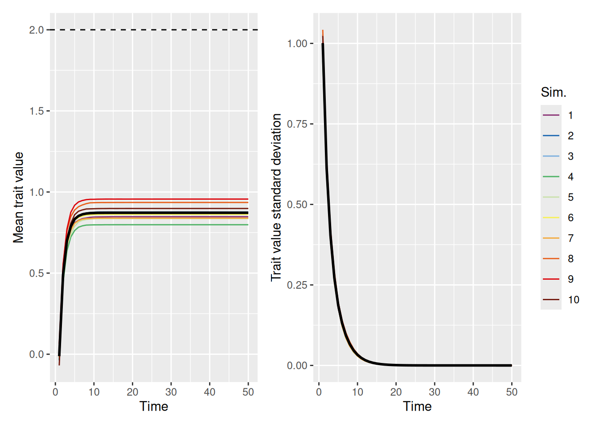
As we can see, the population tends to converge on a single value pretty quickly, but far short of the ideal value! Can increasing the strength of the ideal help? Let’s see. In the simulation below, we set ideal_strength to 10, which is considerably higher than its default value of 1.
`summarise()` has grouped output by 'sim_index'. You can override using the
`.groups` argument.
Code
mean_plot <- trait_summary %>%ggplot(aes(x = t, y = mean_trait, color =factor(sim_index))) +geom_line(linewidth =0.5) +stat_summary(fun = mean, geom ="line", linewidth =1, color ="black") +geom_hline(yintercept =2, linetype ="dashed", color ="black") +scale_color_discreterainbow() +labs(x ="Time", y ="Mean trait value", color ="Sim.")sd_plot <- trait_summary %>%ggplot(aes(x = t, y = sd_trait, color =factor(sim_index))) +geom_line(linewidth =0.5) +stat_summary(fun = mean, geom ="line", linewidth =1, color ="black") +scale_color_discreterainbow() +expand_limits(y =0) +labs(x ="Time", y ="Trait value standard deviation", color ="Sim.")mean_plot + sd_plot +plot_layout(nrow =1, guides ="collect")
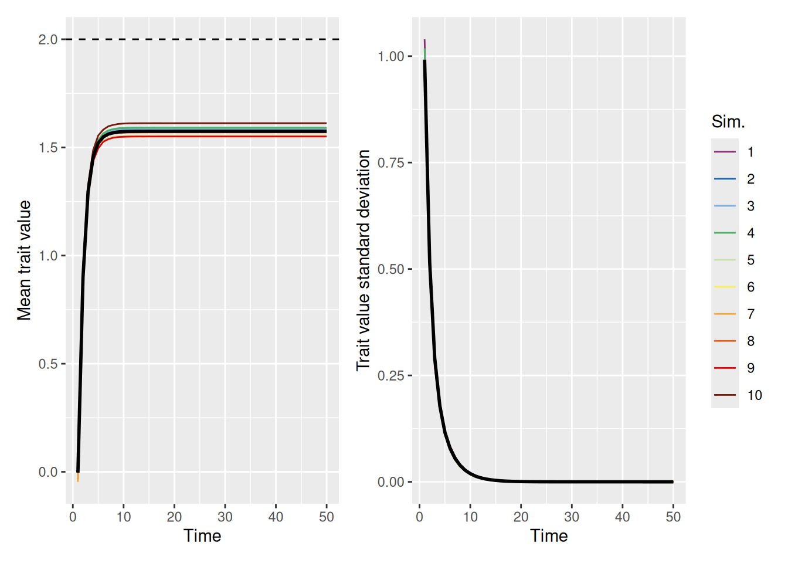
Even when there is a very strong pull to select demonstrators close to the ideal, the population still falls short. The problem is that agents can never adopt a trait that is outside the range of values currently in the population. As the population grows more homogeneous, even though they get closer to the ideal, the lack of diversity in trait values means that the population will never achieve the ideal.
13.5.3 Innovation
One solution to the problem above is to allow for some additional random variability in trait values from one time-step to the next. In evolutionary biology, we might call this random variability “mutation” but since we are talking about ideas not genes, we will call it innovation. As shown in the code below, we will simply add a value sampled from a normal distribution with mean 0 and a standard deviation set by the innovation parameter to each agent’s trait value on each time-step. Everything else about the function is unchanged from before.
As shown in the example below, when we allow for a decent amount of random variation by setting innovation to 0.5, the population average is able to reach the ideal trait value of 2, even without increasing the strength of the ideal value.
`summarise()` has grouped output by 'sim_index'. You can override using the
`.groups` argument.
Code
mean_plot <- trait_summary %>%ggplot(aes(x = t, y = mean_trait, color =factor(sim_index))) +geom_line(linewidth =0.5) +stat_summary(fun = mean, geom ="line", linewidth =1, color ="black") +geom_hline(yintercept =2, linetype ="dashed", color ="black") +scale_color_discreterainbow() +labs(x ="Time", y ="Mean trait value", color ="Sim.")sd_plot <- trait_summary %>%ggplot(aes(x = t, y = sd_trait, color =factor(sim_index))) +geom_line(linewidth =0.5) +stat_summary(fun = mean, geom ="line", linewidth =1, color ="black") +scale_color_discreterainbow() +expand_limits(y =0) +labs(x ="Time", y ="Trait value standard deviation", color ="Sim.")mean_plot + sd_plot +plot_layout(nrow =1, guides ="collect")
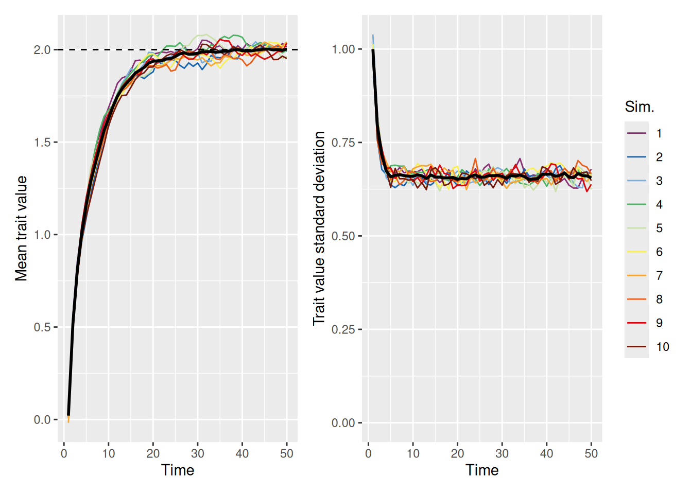
The right graph illustrates that even though the mean trait value in the population is the ideal, there is still considerable variability among the agents in the population. Of course, this is to be expected, given that the model now ensures random variation in trait values will always be present. But it’s worth asking whether the population can still achieve the ideal with a smaller amount of random variability. The simulation below sets innovation to 0.1 to see.
`summarise()` has grouped output by 'sim_index'. You can override using the
`.groups` argument.
Code
mean_plot <- trait_summary %>%ggplot(aes(x = t, y = mean_trait, color =factor(sim_index))) +geom_line(linewidth =0.5) +stat_summary(fun = mean, geom ="line", linewidth =1, color ="black") +geom_hline(yintercept =2, linetype ="dashed", color ="black") +scale_color_discreterainbow() +labs(x ="Time", y ="Mean trait value", color ="Sim.")sd_plot <- trait_summary %>%ggplot(aes(x = t, y = sd_trait, color =factor(sim_index))) +geom_line(linewidth =0.5) +stat_summary(fun = mean, geom ="line", linewidth =1, color ="black") +scale_color_discreterainbow() +expand_limits(y =0) +labs(x ="Time", y ="Trait value standard deviation", color ="Sim.")mean_plot + sd_plot +plot_layout(nrow =1, guides ="collect")
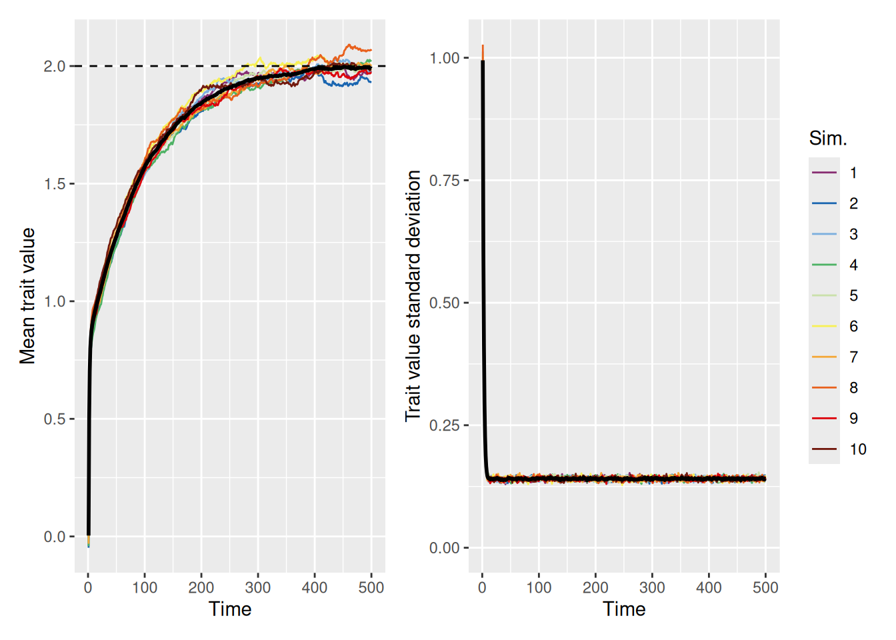
As we can see, it takes longer for the population average to converge on the ideal (note the scale of the \(x\) axes in the above graphs), but they all make it eventually. Even a small amount of diversity can help a population get out of a rut.
13.6 Emergence of belief polarization
We have now seen a number of examples of how agent-based models can help us understand the emergence of a number of interesting social phenomena, like the tendency to evolve toward a single dominant trait, how this is influenced by a preference for conformity, and how innovation can help a population to reach an “ideal” trait value. In this section, we extend our model one last time to address the phenomenon of polarization. Using our continuous-trait model, polarization occurs whenever the population evolves to a point where there are distinct groups of individuals who cluster around different trait values.
Polarization notably occurs in politics, but it also occurs in other domains like the arts (e.g., representational vs. abstract visual art or “uptown” vs. “downtown” styles of musical innovation, etc.) or the sciences (e.g., single- vs. dual-process theories, nature vs. nurture, etc.). Of particular interest is when polarization occurs despite some objective evaluation of the quality of a particular belief. This kind of polarization occurs in fields like climate science, where theories, models, and observations that support the presence of mechanisms that produce climate change are nonetheless disregarded. It also occurs in fields like medicine, where despite extensive disconfirmatory research, people who claim to be scientists (or to lead scientific agencies) nonetheless claim that vaccines cause autism.
These kinds of polarization were studied using agent-based models by O’Connor & Weatherall (2018). Although the model we develop here is different in its technical assumptions, we will implement the same basic interaction and updating processes that they did. In particular, we will see how giving increased weight to demonstrators with similar traits can result in polarization that is shockingly difficult to avoid. However, to presage the moral of the story, we will see that so long as agents give at least some credence to demonstrators who are dissimilar from them, a society can avoid destructive polarization.
13.6.1 Attraction and repulsion
The key idea explored in the models by O’Connor & Weatherall (2018) is this: When an agent picks one or more demonstrators, they give more weight to demonstrators who have similar trait values to them than to demonstrators with dissimilar trait values. Conceptually, it is easy to imagine situations where this occurs: If someone shares your beliefs, you might be more likely to trust that their opinions are sound and to therefore adjust your beliefs to better match those of your interlocutor. On the other hand, if someone espouses a belief that is very different from yours, you might be inclined to disregard them. You may even be repelled by their beliefs and adopt a trait that moves away from theirs! The point is that people may be more inclined to trust people who already hold similar beliefs.
We can build this into our model by changing how agents assign weight to demonstrators. We will measure the similarity between an agent \(i\) and its demonstrators \(j\) using the same exponentially-transformed squared distance measure we’ve been using so far. The rate at which similarity falls off with the squared difference in trait values is governed by a parameter \(\rho\), called similarity_range in our function below. There’s also a parameter for the weight given to a demonstrator with zero similarity, \(\zeta\), called dissimilar_influence in the function below. The weight given to demonstrator \(j\) as a function of its similarity to agent \(i\) is \[
\psi_j = \zeta + \left(1 - \zeta \right) \exp \left[ -\frac{\left( x_i(t) - x_j(t) \right)^2}{2 \rho^2} \right]
\]
This weighting factor is implemented in the commented lines in the revised model code below.
Before we get to running some simulations, it may be useful to visualize how the similarity weight varies as a function of distance and the two parameters just described; see below. When \(\zeta = 1\), similarity doesn’t contribute at all to the weight of a demonstrator. When \(\zeta = 0\), dissimilar demonstrators are given no weight at all. Finally, we \(\zeta < 0\), dissimilar demonstrators are given negative weight, such that the agent updates their trait value away from the demonstrator. This situation will be used below to model distrust of a demonstrator.
The simulation below shows that, when people are only influenced by those who are similar to them, clusters of traits emerge. One cluster is centered around the mean of the initial population (0), but there are also clusters that form on the extremes.
`summarise()` has grouped output by 'sim_index'. You can override using the
`.groups` argument.
Code
mean_plot <- trait_summary %>%ggplot(aes(x = t, y = mean_trait, color =factor(sim_index))) +geom_line(linewidth =0.5) +stat_summary(fun = mean, geom ="line", linewidth =1, color ="black") +scale_color_discreterainbow() +labs(x ="Time", y ="Mean trait value", color ="Sim.")final_plot <- sim %>%filter(t ==max(t)) %>%ggplot(aes(x =factor(sim_index), y = trait, color =factor(sim_index))) +geom_point(position =position_jitter(width =0.2, height =0), alpha =0.5) +scale_color_discreterainbow(guide ="none") +labs(x ="Simulation index", y ="Final trait value", color ="Sim.")mean_plot + final_plot +plot_layout(nrow =1, guides ="collect")
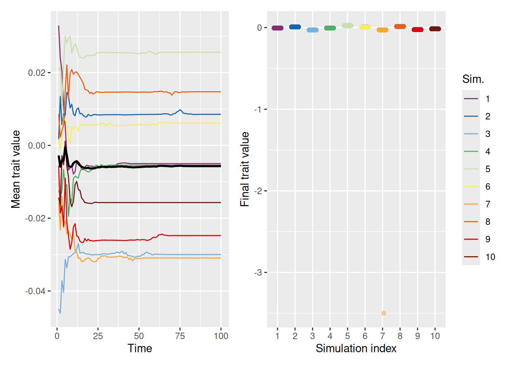
13.6.3 Distrust leads to extreme polarization
Now let’s see what happens when agents do not merely ignore dissimilar demonstrators (dissimilar_influence = 0), but instead distrust dissimilar demonstrators. As noted above, distrust in our model amounts to giving a demonstrator negative weight as similarity diminishes.
`summarise()` has grouped output by 'sim_index'. You can override using the
`.groups` argument.
Code
mean_plot <- trait_summary %>%ggplot(aes(x = t, y = mean_trait, color =factor(sim_index))) +geom_line(linewidth =0.5) +stat_summary(fun = mean, geom ="line", linewidth =1, color ="black") +scale_color_discreterainbow() +labs(x ="Time", y ="Mean trait value", color ="Sim.")final_plot <- sim %>%filter(t ==max(t)) %>%ggplot(aes(x =factor(sim_index), y = trait, color =factor(sim_index))) +geom_point(position =position_jitter(width =0.2, height =0), alpha =0.5) +scale_color_discreterainbow(guide ="none") +labs(x ="Simulation index", y ="Final trait value", color ="Sim.")mean_plot + final_plot +plot_layout(nrow =1, guides ="collect")
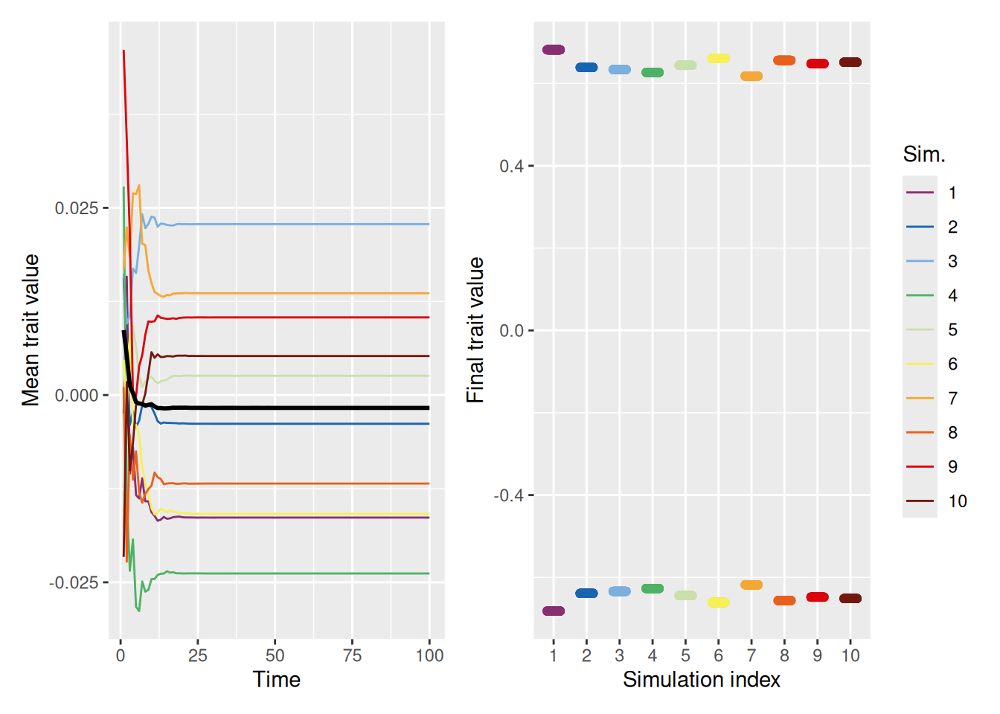
As shown above, with distrust, there are no longer any clusters in the middle—the population evolves into two sets of diametrically opposed traits. This results from the combined influence of agents being pulled toward agents with similar traits and away from agents with dissimilar traits.
That said, if the similarity range is sufficiently large, as in the simulations below, the entire population can again converge on a consensus value.
`summarise()` has grouped output by 'sim_index'. You can override using the
`.groups` argument.
Code
mean_plot <- trait_summary %>%ggplot(aes(x = t, y = mean_trait, color =factor(sim_index))) +geom_line(linewidth =0.5) +stat_summary(fun = mean, geom ="line", linewidth =1, color ="black") +scale_color_discreterainbow() +labs(x ="Time", y ="Mean trait value", color ="Sim.")final_plot <- sim %>%filter(t ==max(t)) %>%ggplot(aes(x =factor(sim_index), y = trait, color =factor(sim_index))) +geom_point(position =position_jitter(width =0.2, height =0), alpha =0.5) +scale_color_discreterainbow(guide ="none") +labs(x ="Simulation index", y ="Final trait value", color ="Sim.")mean_plot + final_plot +plot_layout(nrow =1, guides ="collect")
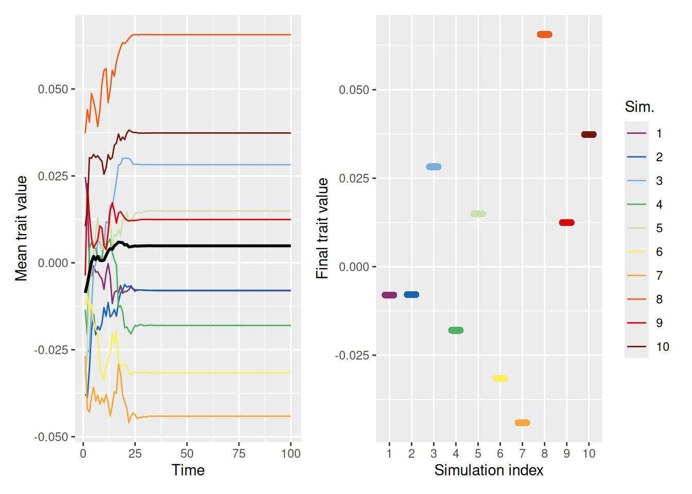
13.6.4 When can a distrustful society arrive at a mutually agreed solution?
The preceding simulations assumed that there was no inherent fitness or value associated with a trait. What happens if there is an ideal trait value? Will this counteract the tendency to polarize? First, let’s simulate a situation where the ideal trait value is 0, which is the mean of the initial trait values for each population.
`summarise()` has grouped output by 'sim_index'. You can override using the
`.groups` argument.
Code
mean_plot <- trait_summary %>%ggplot(aes(x = t, y = mean_trait, color =factor(sim_index))) +geom_line(linewidth =0.5) +stat_summary(fun = mean, geom ="line", linewidth =1, color ="black") +geom_hline(yintercept =0, linetype ="dashed", color ="black") +scale_color_discreterainbow() +labs(x ="Time", y ="Mean trait value", color ="Sim.")final_plot <- sim %>%filter(t ==max(t)) %>%ggplot(aes(x =factor(sim_index), y = trait, color =factor(sim_index))) +geom_point(position =position_jitter(width =0.2, height =0), alpha =0.5) +geom_hline(yintercept =0, linetype ="dashed", color ="black") +scale_color_discreterainbow(guide ="none") +labs(x ="Simulation index", y ="Final trait value", color ="Sim.")mean_plot + final_plot +plot_layout(nrow =1, guides ="collect")
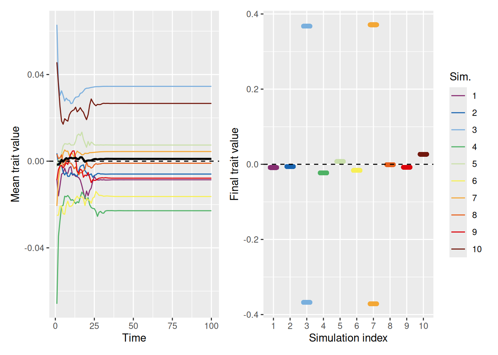
As we can see above, a stronger pull toward the ideal gives the population a chance to avoid falling into the polarization trap. Still, that was only for a population where the ideal value was already close to the average. What happens if the ideal value is not close to the initial mean value of the population? As shown below, even with a strong pull toward an ideal value of 2, polarization occurs. In essence, there is one group who gets close to optimal and another that is diametrically opposed.
`summarise()` has grouped output by 'sim_index'. You can override using the
`.groups` argument.
Code
mean_plot <- trait_summary %>%ggplot(aes(x = t, y = mean_trait, color =factor(sim_index))) +geom_line(linewidth =0.5) +stat_summary(fun = mean, geom ="line", linewidth =1, color ="black") +geom_hline(yintercept =2, linetype ="dashed", color ="black") +scale_color_discreterainbow() +labs(x ="Time", y ="Mean trait value", color ="Sim.")final_plot <- sim %>%filter(t ==max(t)) %>%ggplot(aes(x =factor(sim_index), y = trait, color =factor(sim_index))) +geom_point(position =position_jitter(width =0.2, height =0), alpha =0.5) +geom_hline(yintercept =2, linetype ="dashed", color ="black") +scale_color_discreterainbow(guide ="none") +labs(x ="Simulation index", y ="Final trait value", color ="Sim.")mean_plot + final_plot +plot_layout(nrow =1, guides ="collect")
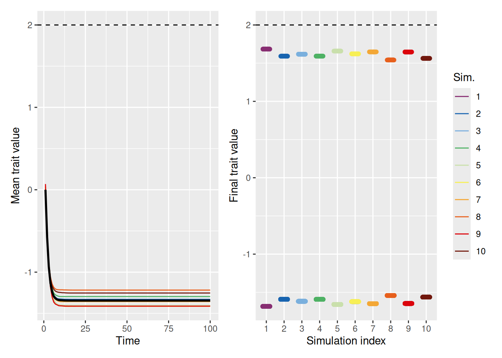
In fact, looking at the mean trait values, it’s clear that most population members fall on the opposite side of the “ideal” value! Why is this? Recall that being close to the ideal increases your status, thus making it more likely that you’ll be chosen as a demonstrator. An agent who has a trait value very different from the ideal will therefore be repelled by most of the demonstrators they select!
Even without distrust—when you just ignore people who are dissimilar—it is possible for some segment of the population to achieve the optimal, but there are often large segments of the population who fail to do so, at least at first.
`summarise()` has grouped output by 'sim_index'. You can override using the
`.groups` argument.
Code
mean_plot <- trait_summary %>%ggplot(aes(x = t, y = mean_trait, color =factor(sim_index))) +geom_line(linewidth =0.5) +stat_summary(fun = mean, geom ="line", linewidth =1, color ="black") +geom_hline(yintercept =2, linetype ="dashed", color ="black") +scale_color_discreterainbow() +labs(x ="Time", y ="Mean trait value", color ="Sim.")final_plot <- sim %>%filter(t ==max(t)) %>%ggplot(aes(x =factor(sim_index), y = trait, color =factor(sim_index))) +geom_point(position =position_jitter(width =0.2, height =0), alpha =0.5) +geom_hline(yintercept =2, linetype ="dashed", color ="black") +scale_color_discreterainbow(guide ="none") +labs(x ="Simulation index", y ="Final trait value", color ="Sim.")mean_plot + final_plot +plot_layout(nrow =1, guides ="collect")
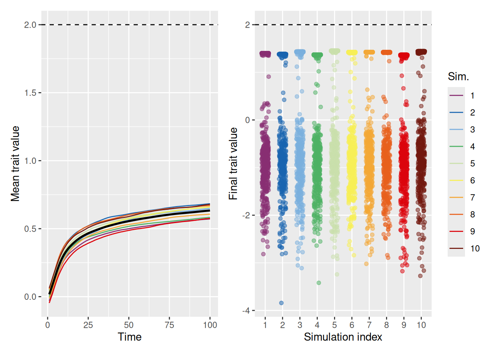
Of course, it is worth remembering what we saw above—that even if you are equally influenced by everyone, the population can often converge on a sub-optimal trait value.
`summarise()` has grouped output by 'sim_index'. You can override using the
`.groups` argument.
Code
mean_plot <- trait_summary %>%ggplot(aes(x = t, y = mean_trait, color =factor(sim_index))) +geom_line(linewidth =0.5) +stat_summary(fun = mean, geom ="line", linewidth =1, color ="black") +geom_hline(yintercept =2, linetype ="dashed", color ="black") +scale_color_discreterainbow() +labs(x ="Time", y ="Mean trait value", color ="Sim.")final_plot <- sim %>%filter(t ==max(t)) %>%ggplot(aes(x =factor(sim_index), y = trait, color =factor(sim_index))) +geom_point(position =position_jitter(width =0.2, height =0), alpha =0.5) +geom_hline(yintercept =2, linetype ="dashed", color ="black") +scale_color_discreterainbow(guide ="none") +labs(x ="Simulation index", y ="Final trait value", color ="Sim.")mean_plot + final_plot +plot_layout(nrow =1, guides ="collect")
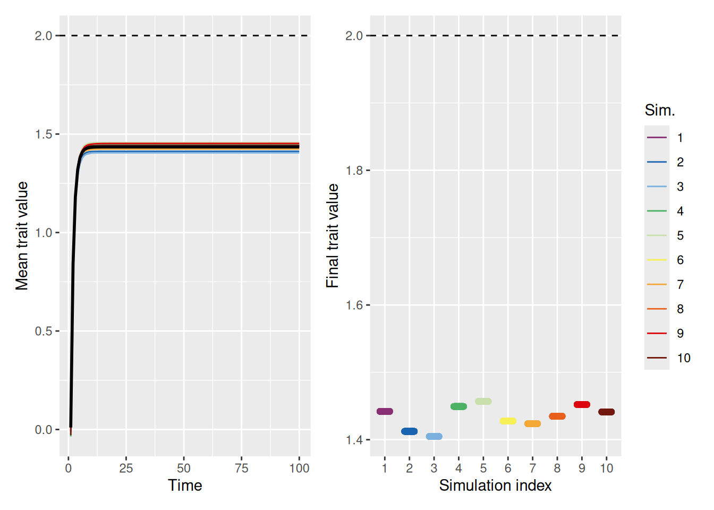
Innovation is not necessarily sufficient for an ignorant population to converge on an optimal solution. This is unlike the previous simulations where innovation was sufficient to get the population “out of its rut”.
`summarise()` has grouped output by 'sim_index'. You can override using the
`.groups` argument.
Code
mean_plot <- trait_summary %>%ggplot(aes(x = t, y = mean_trait, color =factor(sim_index))) +geom_line(linewidth =0.5) +stat_summary(fun = mean, geom ="line", linewidth =1, color ="black") +geom_hline(yintercept =2, linetype ="dashed", color ="black") +scale_color_discreterainbow() +labs(x ="Time", y ="Mean trait value", color ="Sim.")final_plot <- sim %>%filter(t ==max(t)) %>%ggplot(aes(x =factor(sim_index), y = trait, color =factor(sim_index))) +geom_point(position =position_jitter(width =0.2, height =0), alpha =0.5) +geom_hline(yintercept =2, linetype ="dashed", color ="black") +scale_color_discreterainbow(guide ="none") +labs(x ="Simulation index", y ="Final trait value", color ="Sim.")mean_plot + final_plot +plot_layout(nrow =1, guides ="collect")
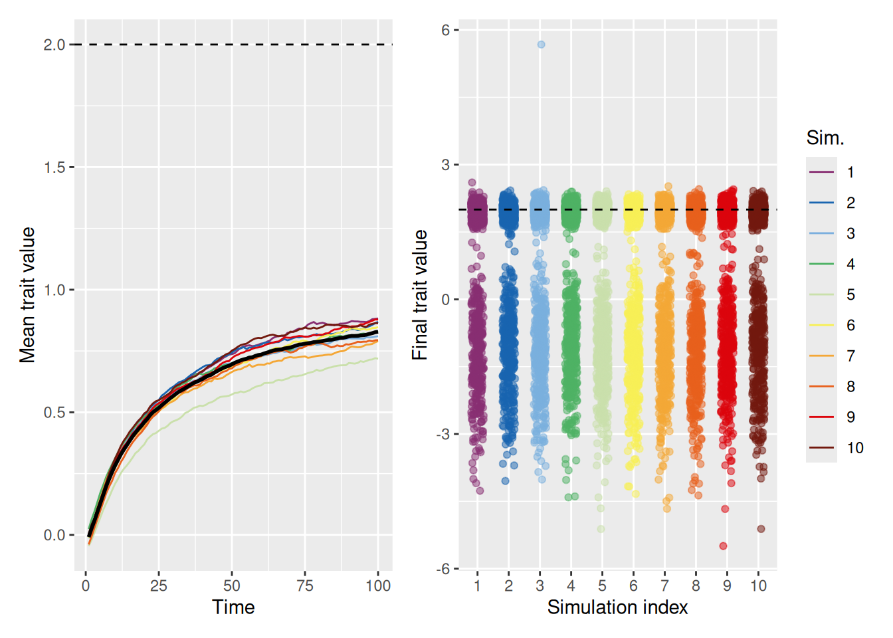
Even a little bit of knowledge goes a long way. If you prioritize, but do not outright dismiss, dissimilar agents, an innovative population can converge on the optimum.
`summarise()` has grouped output by 'sim_index'. You can override using the
`.groups` argument.
Code
mean_plot <- trait_summary %>%ggplot(aes(x = t, y = mean_trait, color =factor(sim_index))) +geom_line(linewidth =0.5) +stat_summary(fun = mean, geom ="line", linewidth =1, color ="black") +geom_hline(yintercept =2, linetype ="dashed", color ="black") +scale_color_discreterainbow() +labs(x ="Time", y ="Mean trait value", color ="Sim.")final_plot <- sim %>%filter(t ==max(t)) %>%ggplot(aes(x =factor(sim_index), y = trait, color =factor(sim_index))) +geom_point(position =position_jitter(width =0.2, height =0), alpha =0.5) +geom_hline(yintercept =2, linetype ="dashed", color ="black") +scale_color_discreterainbow(guide ="none") +labs(x ="Simulation index", y ="Final trait value", color ="Sim.")mean_plot + final_plot +plot_layout(nrow =1, guides ="collect")
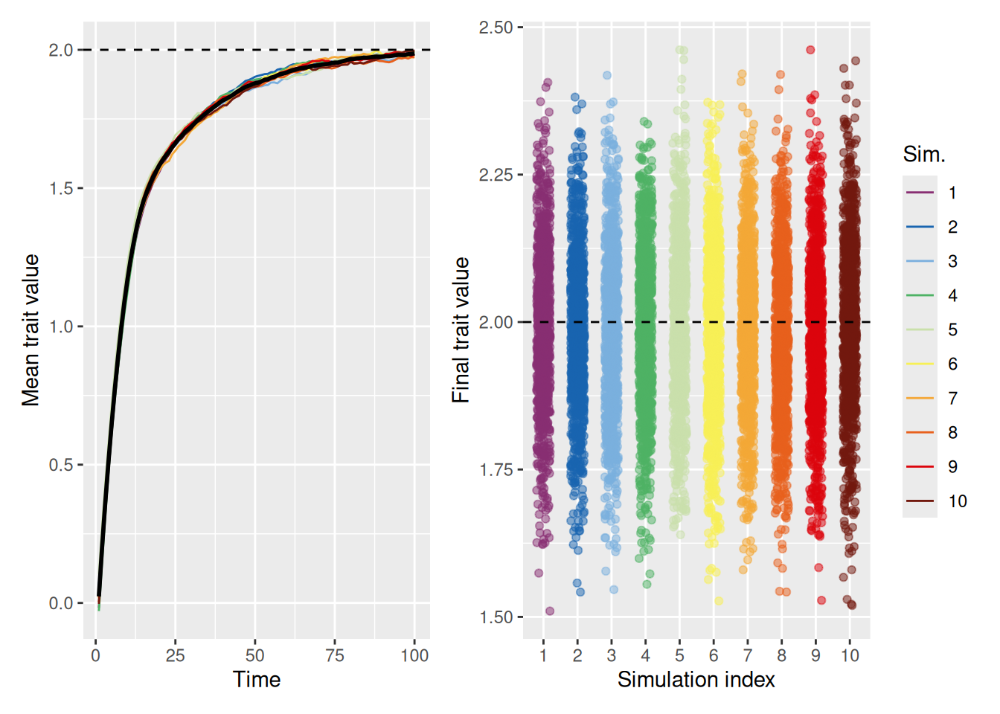
O’Connor, C., & Weatherall, J. O. (2018). Scientific polarization. European Journal for Philosophy of Science, 8(3), 855–875. https://doi.org/10.1007/s13194-018-0213-9
Smith, E. R., & Conrey, F. R. (2007). Agent-based modeling: A new approach for theory building in social psychology. Personality and Social Psychology Review, 11(1), 87–104. https://doi.org/10.1177/1088868306294789